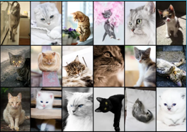
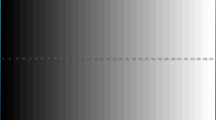
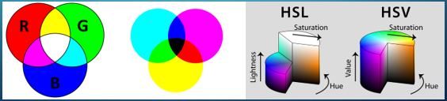
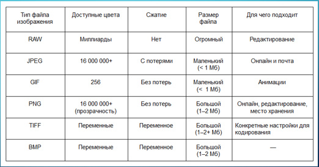

Презентация по курсу "Мультимедиа технологии"
Кодирование графической информации.
Студент группы ИУ3-31М
Форматы файлов изображений.
Выполнил студент группы ИУ3-31М
Еремичев Константин
Вопросы
- Определение графической информации
- Области применения графической информации
- Форматы представления графической информации
- Типы кодирования графической информации
- Форматы файлов изображений
Графическая информация
Под графической информацией подразумевают всю совокупность информации, которая нанесена на самые различные носители
— бумагу, пленку, кальку, картон, холст, оргалит, стекло, стену и т. д.
В определенной степени графической информацией можно считать и объективную реальность,
на которую направлен объектив фотоаппарата или цифровой камеры.
Компьютерная графика - область информатики, изучающая методы и свойства
обработки изображений с помощью программно-аппаратных средств.
Области применения графической информации
Научная графика
Деловая графика
Инженерная графика
Художественная и иллюстрационная графика
Рекламная графика
Форматы представления графической информации: Векторное представление
В векторной графике графическая информация — это данные, математически описывающие графические примитивы,
составляющие рисунок: прямые, дуги, прямоугольники, овалы и пр. Положение и форма графических примитивов
представляются в системе экранных координат. Данный подход применяется в печати и моделировании.

Форматы представления графической информации: Растровое представление
Растровое изображение — это набор пикселей, представленных в виде сетки с точками разных
цветов из которых и формируется картинка. Все основные типы цифровых
изображений имеют растровое представление.

Форматы представления графической информации: фрактальное представление
Фрактальное изображение состоит из множества самоподобных элементов,
предсказание фрактального изображения в конечном виде невозможно.
Фрактальная графика незаменима при создании изображений облаков, гор,
водных и других поверхностей очень напоминающих природные неевклидовые поверхности.
Типы кодирования графической информации
Черно-белый
В черно-белом формате каждый пиксель изображения кодируется одним битом,
т.е. каждый пиксель может иметь либо черный, либо белый цвет
Типы кодирования графической информации
Градации серого
При кодировании в градациях серого, каждый пиксель изображения
кодируется определенным количеством битов,
обозначающих его цвет в пространстве цветов черно-белого спектра.

Типы кодирования графической информации
Цветное кодирование: RGB, CMYK, HSL, HSV
При цветном кодировании в зависимости от выбранной схемы, каждый пиксель представляется набором чисел, характеризующих его цвет в цветовом пространстве.

Форматы файлов изображений

Вывод
Графические изображения повсюду окружают нас в информационном пространстве. Одно из главных мест
во всемирной паутине занимает графический контент. По этой причине усовершенствование алгоритмов
работы с графикой и алгоритмов кодирования визуальной информации является важным вопросом, требующим освещения